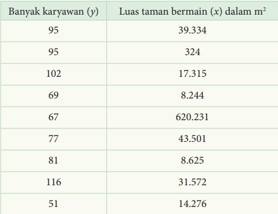
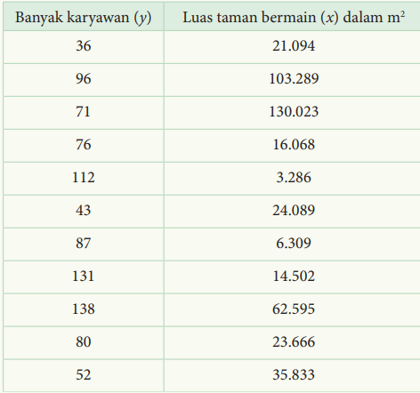

Gambar 1.5
 Jawaban
a) Diagram pencar

b) yt = 85,334 – 0,0000259x
c) r^2= 0,016
d) Garis di atas tidak akan memberikan hasil yang akurat karena nilai
r^2 yang sangat kecil.
e) Jika data (620,231; 67) dihapus maka garis regresi yang baru adalah
yt = 83,402 + 0,0000387x
f) Penghapusan data tersebut sangat memengaruhi perubahan garis
regresinya karena data tersebut merupakan data yang keluar jauh
dari kumpulan data lainnya.